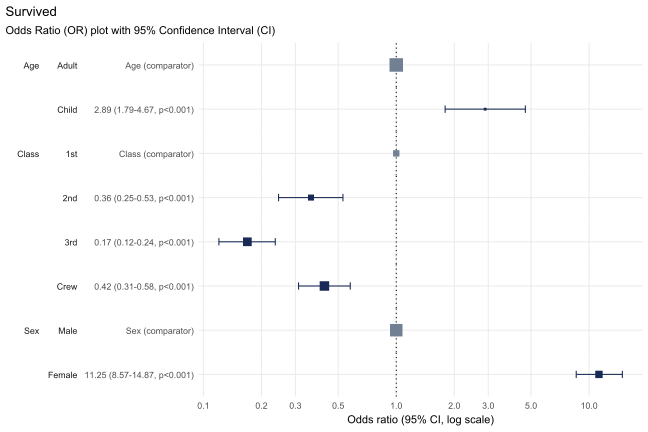

The goal of plotor is to generate Odds Ratio plots from logistic regression models.
Installation
You can install the development version of plotor from GitHub with:
# install.packages("devtools")
devtools::install_github("craig-parylo/plotor")You can also install the latest released version from Cran with:
install.packages("plotor")Example
In this example we will explore the likelihood of surviving the Titanic disaster based on passenger economic status (class), sex, and age group.
In addition to plotor the packages we will use include dplyr, tidyr and forcats for general data wrangling, the stats package to conduct the logistic regression followed by broom to tidy the output and convert the results to Odds Ratios and confidence intervals, then ggplot2 to visualise the plot.
library(plotor) # generates Odds Ratio plots
library(datasets) # source of example data
library(dplyr) # data wrangling
library(tidyr) # data wrangling - uncounting aggregated data
library(forcats) # data wrangling - handling factor variables
library(stats) # perform logistic regression using glm function
library(broom) # tidying glm model and producing OR and CI
library(ggplot2) # data visualisationStart with getting the data from the datasets package.
df <- datasets::Titanic |>
as_tibble() |>
# convert counts to observations
filter(n > 0) |>
uncount(weights = n) |>
# convert categorical variables to factors.
# we specify an order for levels in Class and Survival, otherwise ordering
# in descending order of frequency
mutate(
Class = Class |>
fct(levels = c('1st', '2nd', '3rd', 'Crew')),
Sex = Sex |>
fct_infreq(),
Age = Age |>
fct_infreq(),
Survived = Survived |>
fct(levels = c('No', 'Yes'))
)We now have a tibble of data containing four columns:
Survived- our outcome variable describing whether the passenger survivedYesor diedNo,Class- the passenger class, either1st,2nd,3rdorCrew,Sex- the gender of the passenger, eitherMaleorFemale,Age- whether the passenger was anAdultorChild.
We next conduct a logistic regression of survival (as a binary factor: ‘yes’ and ‘no’) against the characteristics of passenger class, sex and age group. For this we use the Generalised Linear Model function (glm) from the stats package, specifying:
the family as ‘binomial’, and
the formula as survival being a function of
Class,SexandAge.
# conduct a logistic regression of survival against the other variables
lr <- glm(
data = df,
family = 'binomial',
formula = Survived ~ Class + Sex + Age
)Finally, we can plot the Odds Ratio of survival using the plot_or function.
# using plot_or
plot_or(glm_model_results = lr)
This plot makes it clear that:
Children were 2.89 times more likely to survive than Adults,
Passengers in
2nd,3rdclass as well asCrewwere all less likely to survive than those in1stclass,Women were 11.25 times more likely to survive than men.